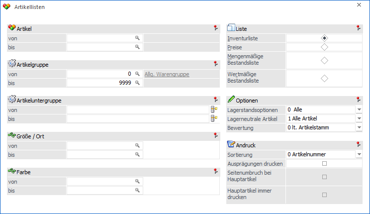
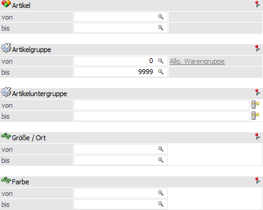
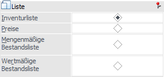
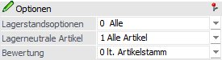
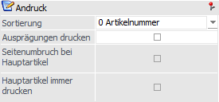
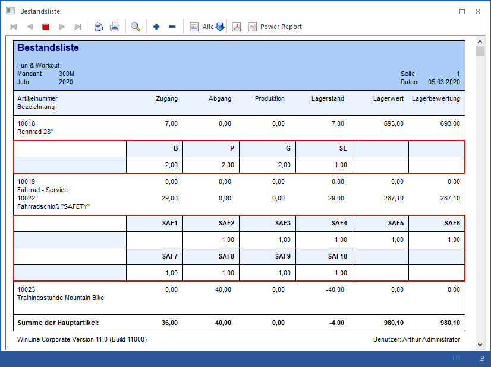
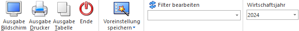

Über Auswertung "Artikellisten", welche im Menüpunkt…
1 WinLine FAKT
1 Auswertungen
1 Artikellisten
1 Artikellisten
… aufgerufen wird, kann eine Liste der angelegten Artikel ausgegeben werden.

Die Ausgabe kann durch folgende Kriterien eingeschränkt bzw. beeinflusst werden:
Grundselektion

Ø Artikel von / bis
An dieser Stelle kann nach den Artikeln eingeschränkt werden, welche ausgewertet werden sollen. Bleiben die Felder leer so werden alle Artikel in die Auswertung einbezogen.
Ø Artikelgruppe von / bis
In diesen Feldern kann nach den Artikelgruppen eingeschränkt werden, welche ausgegeben werden sollen.
Ø Artikeluntergruppe von / bis
An dieser Stelle kann nach den Artikeluntergruppen eingeschränkt werden. Bleiben die Felder leer so werden alle Artikel aller Artikeluntergruppen in die Auswertung einbezogen.
Ø Ausprägung 1 von / bis (hier "Größe / Ort")
Zusätzlich kann eine Einschränkung auf die Ausprägung 1 vorgenommen werden. Sobald eine Einschränkung auf Ausprägung 1 vorhanden ist, wird die, unter "Artikel" eingegebene Nummer, als Hauptartikelnummer verwendet. Außerdem wird die Option "Ausprägungen drucken" aktiviert.
Beispiel
Wenn in der Artikelliste unter "Artikel von / bis" die Nummer "10018" und unter Ausprägung 1 "K" bis "E" eingegeben wird, werden alle selektierten Ausprägungsartikel des Artikels 10018 angezeigt.
Ø Ausprägung 2 von / bis (hier "Farbe")
Neben Ausprägung 1 kann auch eine Einschränkung auf die Ausprägung 2 vorgenommen werden. Sobald eine Einschränkung auf Ausprägung 2 vorhanden ist, wird die, unter "Artikel" eingegebene Nummer, als Hauptartikelnummer verwendet. Außerdem wird die Option "Ausprägungen drucken" aktiviert.
Beispiel
Wenn in der Artikelliste unter "Artikel von / bis" die Nummer "CZ010" und unter Ausprägung 2 "GR" bis "ROT" eingegeben wird, werden alle selektierten Ausprägungsartikel des Artikels CZ010 angezeigt.
Liste

In dem Bereich "Liste" kann definiert werden, was für eine Art von Artikelliste ausgegeben werden soll.
Ø Inventurliste
In dieser Auswertung werden die Artikel mit dem Inventurstand des Vorjahres, den Bewegungsdaten des aktuellen Jahres und dem aktuellen Lagerstand ausgegeben. Bei Verwendung der Kommissionierung bzw. Verwendung der Lagerstandsoption "7 - mit komm. Menge > 0" wird eine zusätzlichen Spalte "Lager Soll abzgl. Komm." dargestellt.
Ø Preise
In dieser Auswertung werden die Artikel mit den allgemeinen Verkaufspreisen der hinterlegten Preislisten ausgegeben.
Ø Mengenmäßige Bestandsliste
In dieser Auswertung werden die Artikel mit den mengenmäßigen Beständen des aktuellen Jahres ausgegeben. Bei Verwendung der Kommissionierung bzw. Verwendung der Lagerstandsoption "7 - mit komm. Menge > 0" wird eine zusätzlichen Spalte "Lager Soll abzgl. Komm." dargestellt.
Ø Wertmäßige Bestandsliste
In dieser Auswertung werden die Artikel mit den wertmäßigen Beständen des aktuellen Jahres ausgegeben
Optionen

In dem Bereich "Optionen" können weitere Einstellungen für die Bewertung bzw. die Selektion der Artikel getroffen werden.
Ø Lagerstandsoptionen
An dieser Stelle kann Aufgrund des Lagerstands definiert werden, welche Artikel ausgegeben werden sollen.
ü 0 - Alle Artikel
Es werden alle
Artikel ausgewertet.
ü 1 - mit Lagerbewegung
Es werden
alle Artikel ausgewertet, die im Lager zumindest einmal bewegt wurden. Dabei
wird der Lagerstand nicht berücksichtigt.
ü 2 - mit Lagerstand größer 0
Es
werden alle Artikel ausgewertet, die einen positiven Lagerstand haben. Dabei
werden Artikel, die zwar Lagerbewegungen aufweisen, aber deren Lagerstand 0 ist,
nicht berücksichtigt.
ü 3 - mit Lagerstand ungleich
0
Hier werden alle Artikel angedruckt, deren Lagerstand nicht 0 ist, also
auch Artikel, die einen negativen Lagerstand (lagerneutrale Artikel)
aufweisen.
ü 4 - mit Lagerstand kleiner
0
Hier werden alle Artikel angedruckt, deren Lagerstand kleiner 0 ist.
ü 5 - mit Lagerstand gleich 0 und
Lagerwert ungleich 0
Hier werden alle Artikel angedruckt, deren Lagerstand
zwar 0 ist, die jedoch einen Lagerwert aufweisen (egal ob dieser negativ oder
positiv ist).
ü 6 - mit Lagerstand gleich 0
(unabhängig vom Lagerwert)
Hier werden alle Artikel angedruckt, deren
Lagerstand 0 ist, unabhängig davon wie hoch der Lagerwert ist.
ü 7 - mit komm. Menge größer 0
(steht nur für die Auswertungen "Inventurliste, sowie für mengen- und wertmäßige
Bestandsliste zur Verfügung)
Mit dieser Option werden nur jene Artikel
ausgegeben, die eine kommissionierte Menge größer 0 aufweisen. Auf den
Auswertungen der "Inventurliste" (P02W24A1) sowie der "mengenmäßigen
Bestandsliste" (P02W24A2) wird eine eigene Spalte " abzgl. Komm." dazu
ausgewiesen.
Ø Lagerneutrale Artikel
Mit Hilfe der Auswahl "Lagerneutrale Artikel" kann gewählt werden, ob lagerneutrale Artikel ebenfalls ausgegeben werden soll. Hierfür stehen die folgenden Varianten zur Verfügung:
ü 1 - Alle Artikel
ü 2 - Nur lagerneutrale Artikel
ü 3 - Keine lagerneutralen Artikel
Ø Bewertung
Die Bewertung der Artikelliste kann nach den folgenden Kriterien erfolgen:
ü 0 - lt. Artikelstamm
Hinweis
D.h. nach der Artikelstamm-Einstellung im Register "Lager" - Unterregister "Einstellungen" - "Lagerbewertung".
ü 1 - Einstandspreis
ü 2 - letzter Einkaufspreis
ü 3 - niedrigster Einkaufspreis
ü 4 - letzter Einkaufspreis + Bezugskosten
Hinweis
Es werden die Bezugskosten pro Stück berücksichtigt, wenn im Artikelstamm (Register "Lager" - Unterregister "Lagerwerte") ein Eintrag für die Bezugskosten vorhanden ist. Ansonsten wird der BNK -Prozentsatz aus der Artikelgruppe berücksichtigt.
ü 5 - allgemeiner Einkaufspreis
Andruck

In dem Bereich "Andruck" können Einstellungen für den Andruck getroffen werden.
Ø Sortierung
Zusätzlich kann festgelegt werden, wie die Liste sortiert werden soll. Dabei stehen die folgenden Optionen zur Verfügung:
ü 0 - Artikelnummer
ü 1 - Artikelgruppe
ü 2 - Artikeluntergruppe
Ø Ausprägungen drucken
Durch Aktivieren der Checkbox "Ausprägungen drucken" können auch die Ausprägungen eines Artikels (z.B. verschiedene Größen, Lagerorte, Identnummern etc.) angedruckt werden.
Hinweis
Für Ausprägungen ist es möglich eine tabellarische Druckvariante zu nutzen. Hierfür muss in den Ausprägungsoptionen (Register "Drucken") die Verwendung des Subformulars (pro Artikeltyp) aktiviert werden.

Des Weiteren muss in dem Ausgabeformular ein SUB-Formular hinterlegt sein. Dieses ist in dem Standardauslieferungsformular "P02W24A2S" bereits implementiert.
Ø Seitenumbruch bei Hauptartikel
Durch die Checkbox "Seitenumbruch bei Hauptartikel" wird nach jeder Ausgabe eines Hauptartikels ein Seitenumbruch durchgeführt (nur relevant, wenn mit Ausprägungsartikeln - z.B. Lagerorte, Größen, Farben, Seriennummern, Chargennummern, etc. - gearbeitet wird).
Ø Hauptartikel immer drucken
Mit dieser Option wird zusätzlich die Hauptartikelzeile mit angedruckt, auch wenn durch eine weitere Option (z.B. Lagerstand = 0 und Lagerwert <> 0) der Hauptartikel ausgeschlossen werden würde. Diese Option kann nur gesetzt werden, wenn auch die Option "Ausprägungen drucken" aktiviert ist.
Unterstützt wird diese Option bei den Listen "Inventurliste", "Mengenmäßige Bestandsliste" und "Wertmäßige Bestandsliste".
Buttons

Ø Ausgabe Bildschirm
Mit Hilfe des Buttons "Ausgabe Bildschirm" oder der Taste F5 wird die Auswertung am Bildschirm ausgegeben.
Ø Ausgabe Drucker
Durch Anwahl des Buttons "Ausgabe Drucker" wird die Auswertung am Drucker ausgegeben.
Ø Ausgabe Tabelle (nur bei mengen- oder wertmäßiger Bestandsliste)
Bei der Anwahl des Buttons "Ausgabe Tabelle" wird die Artikelliste in Form einer WinLine Tabelle dargestellt (nähere Informationen entnehmen Sie bitte dem Kapitel Artikelbestandsliste Tabelle).
Ø Ende
Durch Drücken des Buttons "Ende" bzw. der Taste ESC wird das Fenster geschlossen.
Ø Voreinstellung speichern
Durch Anwahl dieses Buttons erfolgt eine benutzerspezifische Speicherung aller im Fenster getätigten Einstellungen. Diese sogenannten "Voreinstellungen" können jederzeit wieder abgerufen werden und ermöglichen dadurch ein schnelleres und zielorientierteres Arbeiten (nähere Informationen entnehmen Sie bitte dem Kapitel "Die Voreinstellungen").
Ø Filter bearbeiten
Durch Anklicken des Buttons "Filter bearbeiten" kann die Artikelliste nach frei definierbaren Kriterien eingeschränkt werden.
Ø Wirtschaftsjahr
Über die Auswahlbox kann das Wirtschaftsjahr gewählt werden, für welches die Auswertung erfolgen soll. Damit können die Daten aus den Vorjahren angezeigt werden, ohne dass das Fenster geschlossen und ein manueller Wirtschaftsjahreswechsel vorgenommen werden muss.